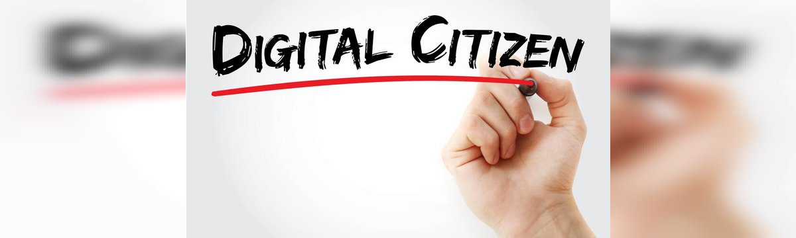

Informazione e libertà
Internet viene censurato applicando dei filtri che bloccano i contenuti considerati pericolosi, come quelli relativi a tematiche sociali, nonché notizie e opinioni riguardanti conflitti e sicurezza. Da uno studio che analizza il rapporto tra censura e Internet nei vari Paesi del mondo è emerso che i Paesi più “digitalmente repressivi” sono la Corea del Nord, la Cina, e a pari merito Russia, Iran e Turkmenistan.
Competenze digitali
Per essere dei buoni cittadini digitali bisogna:
- usare in modo responsabile e positivo le tecnologie offerte dal web; fare un uso corretto e attento dei social network, delle chat e di tutti i luoghi abitati dalla comunità virtuale;
- navigare in sicurezza e in modo autonomo, imparando a riconoscere le insidie di internet come le truffe o il furto di dati; proteggere la propria privacy e rispettare quella degli altri;
- avere sempre un comportamento civile, che non danneggi noi stessi e gli altri.
La "Costituzione" di internet
Nel 2015 una commissione di studio della Camera dei Deputati, la Commissione per i diritti e i doveri in Internet, ha redatto la Carta dei diritti di Internet, un documento che dà un fondamento costituzionale ai princìpi e ai diritti connessi alla dimensione virtuale e, in generale, alla nostra “vita online”.
COMUNICAZIONE SBAGLIATA NEL WEB
Nel web sono molte le persone che rovinano questo nostro spazio digitale incitando all'odio, oppure divulgando notizie false per ingannare i più "creduloni" di noi. Possiamo vedere dei casi qui sotto:
-
FLAME WAR
Un flame (dall'inglese per "fiamma") è un messaggio deliberatamente ostile e provocatorio inviato da un utente alla comunità o a un altro individuo specifico; flaming è l'atto di inviare tali messaggi, flamer chi li invia, e flame war ("guerra di fiamme") è lo scambio di insulti che spesso ne consegue, paragonabile a una "rissa virtuale".
-
HATE SPEECH
Hate speech: espressione di odio e incitamento all’odio di tipo razzista, tramite discorsi, slogan e insulti violenti, rivolti contro individui, specialmente se noti o famosi, o intere fasce di popolazione (stranieri e immigrati, donne, persone di colore, omosessuali, credenti di altre religioni,disabili, ecc.).
-
FAKE NEWS
L'espressione in lingua inglese Fake news indica articoli o pubblicazioni su reti sociali redatti con informazioni inventate, ingannevoli o distorte, resi pubblici con il deliberato intento di disinformare o di creare scandalo attraverso i mezzi di informazione. Possono esserci vari strumenti per diffonderle ovvero le emittenti televisive e le testate giornalistiche.
Comunicare sul web
Per comunicare sul web non basta farsi capire: è necessario eddere efficaci, non annoiare chi legge, non dilungarci, rispettare le regole del "luogo" in cui ci troviamo (mail, chat, social network, ecc). Saper comunicare online non è un talento innato, ma una competenza che si apprende con il tempo e soprattutto con l'esercizio. È bene conoscere la netiquette, (parola composta da network, “rete” ed étiquette, “buona educazione”), che rappresenta l’insieme delle regole di buona educazione da rispettare nella comunicazione in rete.
Il cyberspazio è diverso dal mondo reale, ma è abitato dalle stesse persone. Le parole violente o aggressive si riversano su persone in carne ed ossa, che ovviamente ne soffrono. Alcuni studi hanno dimostrato che su Internet siamo più disinibiti, coraggiosi e feroci; protetti dall’anonimato e da uno schermo, dimentichiamo che dall’altra parte ci sono persone reali. La comunicazione online deve quindi avvenire all’insegna del rispetto altrui, seguendo due regole d’oro: non scrivere ciò che non diresti di persona e non fare agli altri quello che non vorresti sia fatto a te.
Con l'obiettivo di rendere la Rete un luogo migliore è nata "PAROLE O_STILI", un'associazione di persone che si occupano di comunicazione, che ha elaborato il Manifesto della comunicazione non ostile, fatto da dieci regole essenziali per impedire che in Rete si diffondano odio e discriminazione. Puoi vedere il manifesto qui sotto.
Come funziona la cittadinanza digitale
Normata dal Codice dell'Amministrazione Digitale, la cittadinanza digitale riguarda la capacità e la possibilità di cittadini e imprese di partecipare alla società tramite strumenti digitali
-

CITTADINANZA DIGITALE
Quando si parla di cittadinanza digitale ci si riferisce alla capacità – e alla possibilità – per i cittadini e le imprese di partecipare alla società attraverso mezzi e strumenti digitali. Il focus si sposta, quindi, verso la creazione di nuove modalità d'accesso a servizi già esistenti e la creazione di nuovi servizi. Tra questi strumenti, ad esempio, troviamo l'anagrafe unica digitale e l'identità digitale, pensate e realizzate per snellire e velocizzare procedimenti burocratici che, altrimenti, richiederebbero diversi giorni se non settimane.
-
Carta della cittadinanza digitale
Introdotta con la legge delega in materia di riorganizzazione delle amministrazioni pubbliche, n. 124 del 7 agosto 2015, e successivamente modificata e integrata con il D.Lgs. n. 179 del 26 agosto 2016 (concernente modifiche ed integrazioni al Codice dell'amministrazione digitale) e con il D.Lgs. n. 217 del 13 dicembre 2017, la Carta della cittadinanza digitale stabilisce diritti e doveri "digitali" dei cittadini e indica dei principi fondamentali che aiuteranno il processo di ammodernamento della Pubblica Amministrazione.
-
Domicilio digitale
Introdotto con la revisione del CAD di inizio 2018, il domicilio digitale è un indirizzo di posta elettronica certificata che, al pari del domicilio "fisico", potrà essere utilizzato per ricevere le comunicazioni da parte della Pubblica Amministrazione. Ad esempio, da febbraio 2018 è possibile ricevere le multe direttamente sulla casella PEC personale e risparmiare sulle spese di notifica (si calcola che si potranno ottenere sconti sulle multe fino a 20 euro)